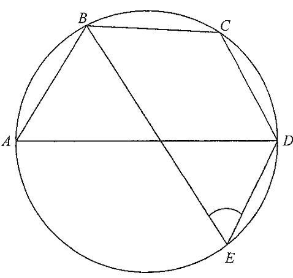

<!DOCTYPE html>
<html lang="en">
<head>
<meta charset="UTF-8">
<meta name="viewport" content="width=device-width, initial-scale=1.0">
<title>HKDSE 2017 Paper 2 Q21 — Circle Geometry</title>
<script>
window.MathJax = { tex: { inlineMath: [['$','$'],['\\(','\\)']], displayMath: [['$$','$$'],['\\[','\\]']] }, svg:{fontCache:'global'} };
</script>
<script src="https://cdn.jsdelivr.net/npm/mathjax@3/es5/tex-svg.js" async></script>
<style>
  *{box-sizing:border-box;}
  body{
    margin:0;
    font-family:'Segoe UI',system-ui,-apple-system,sans-serif;
    background:linear-gradient(160deg,#eef4ff 0%,#f7fbff 40%,#eefaf3 100%);
    color:#1e293b;
    padding:16px;
  }
  h1{
    font-size:1.15rem;
    text-align:center;
    margin:0 0 14px;
    color:#0f3d5c;
    letter-spacing:.3px;
  }
  .split{
    display:grid;
    grid-template-columns:minmax(0,1fr) minmax(0,1fr);
    gap:12px;
    align-items:start;
  }
  @media(min-width:900px){
    .split{grid-template-columns:minmax(0,46%) minmax(0,54%);gap:18px;}
  }
  .panel{
    background:#ffffff;
    border-radius:16px;
    box-shadow:0 6px 22px rgba(30,64,175,.10),0 2px 6px rgba(30,64,175,.06);
    padding:14px;
  }
  .diagram{
    position:sticky;
    top:16px;
    max-height:calc(100vh - 2rem);
    overflow-y:auto;
  }
  canvas{
    width:100%;
    height:auto;
    display:block;
    border-radius:12px;
    background:#fdfefe;
  }
  .legend{
    display:flex;
    flex-wrap:wrap;
    gap:8px 14px;
    margin-top:10px;
    font-size:.72rem;
    color:#334155;
  }
  .legend span{display:flex;align-items:center;gap:5px;}
  .dot{width:12px;height:12px;border-radius:50%;display:inline-block;}
  .caption{
    margin-top:8px;
    font-size:.72rem;
    color:#64748b;
    text-align:center;
    font-style:italic;
  }
  .qbox{
    background:linear-gradient(135deg,#eef6ff,#f0fff8);
    border-left:5px solid #2563eb;
    border-radius:10px;
    padding:12px 14px;
    font-size:.9rem;
    line-height:1.55;
    margin-bottom:14px;
  }
  .qbox b{color:#1d4ed8;}
  .choices{
    display:grid;
    grid-template-columns:repeat(4,1fr);
    gap:6px;
    margin-top:10px;
    font-size:.8rem;
  }
  .choices div{
    background:#fff;
    border:1px solid #cbd5e1;
    border-radius:8px;
    padding:6px 4px;
    text-align:center;
    font-weight:600;
    color:#334155;
  }
  .step{
    border:1px solid #e2e8f0;
    border-left:5px solid #94a3b8;
    border-radius:12px;
    padding:12px 14px;
    margin-bottom:12px;
    background:#fbfdff;
    transition:all .25s ease;
    font-size:.85rem;
    line-height:1.6;
  }
  .step.active{
    border-left-color:#f59e0b;
    background:#fffdf5;
    box-shadow:0 4px 16px rgba(245,158,11,.16);
    transform:translateX(2px);
  }
  .tag{
    display:inline-block;
    font-weight:700;
    font-size:.72rem;
    letter-spacing:.5px;
    color:#fff;
    background:#64748b;
    padding:3px 9px;
    border-radius:999px;
    margin-bottom:8px;
  }
  .step.active .tag{background:#f59e0b;}
  .ans{
    margin-top:6px;
    background:linear-gradient(135deg,#ecfdf5,#d1fae5);
    border:2px solid #10b981;
    border-radius:12px;
    padding:12px 14px;
    text-align:center;
    font-weight:700;
    color:#065f46;
    font-size:.95rem;
  }
  .hint{
    font-size:.75rem;
    color:#b45309;
    background:#fffbeb;
    border:1px dashed #fcd34d;
    border-radius:8px;
    padding:8px 10px;
    margin-top:8px;
  }
  @media(max-width:520px){
    body{padding:8px;}
    .panel{padding:9px;border-radius:12px;}
    .step,.qbox{font-size:.74rem;padding:9px;}
    .tag{font-size:.62rem;}
    .choices{font-size:.65rem;}
    .legend{font-size:.6rem;}
    h1{font-size:.9rem;}
  }
</style>
<link rel="stylesheet" href="assets/extra.css">
</head>
<body>

<h1>HKDSE 2017 Paper 2 — Q21 · Circle Geometry</h1>

<div class="split">

  <!-- ============ LEFT: DIAGRAM ============ -->
  <section class="panel diagram">
    <canvas id="cv" width="620" height="620"></canvas>
    <div class="legend">
      <span><i class="dot" style="background:#2563eb"></i>Circle &amp; diameter AD</span>
      <span><i class="dot" style="background:#ef4444"></i>Chord AB / BD</span>
      <span><i class="dot" style="background:#10b981"></i>Chords BC = CD</span>
      <span><i class="dot" style="background:#a855f7"></i>Chords BE, CE, DE</span>
      <span><i class="dot" style="background:#f59e0b"></i>Angles</span>
    </div>
    <div class="caption">Figure drawn to scale — orientation matches the exam figure</div>
  </section>

  <!-- ============ RIGHT: QUESTION & SOLUTION ============ -->
  <section class="panel">
    <div class="qbox">
      <b>[2017 MC #21]</b> In the figure, \(AD\) is a diameter of the circle \(ABCDE\).
      If \(BC = CD\) and \(\angle ABC = 110^\circ\), then \(\angle BED =\)
      <div class="choices">
        <div>A. 20°</div>
        <div>B. 35°</div>
        <div>C. 40°</div>
        <div>D. 55°</div>
      </div>
      <div class="hint">💡 Hint: An angle in a semicircle is \(90^\circ\). Then look for equal angles standing on equal chords.</div>
    </div>

    <figure style="margin:12px 0;text-align:center;"><figcaption style="font-size:.78rem;color:#64748b;margin-top:6px;">Figure (original exam diagram)</figcaption></figure>

    <div class="step" data-step="1">
      <span class="tag">STEP 1 · Angle in semicircle</span>
      Since \(AD\) is a diameter and \(B\) lies on the circle, the angle in the semicircle is a right angle:
      $$\angle ABD = 90^\circ \quad (\angle \text{ in semi-circle})$$
    </div><div class="rule"><span class="rule-name">Angle in a Semicircle</span>
  <span class="rule-math">\(\text{angle in a semicircle}=90^{\circ}\)</span>
<span class="rule-why">\(AD\) is a diameter and \(B\) lies on the circle, so \(ngle ABD=90^{\circ}\).</span>
</div>
        

    <div class="step" data-step="2">
      <span class="tag">STEP 2 · Find ∠CBD</span>
      At \(B\), the angle \(\angle ABC\) is split by chord \(BD\) into \(\angle ABD\) and \(\angle CBD\):
      $$\angle CBD = \angle ABC - \angle ABD = 110^\circ - 90^\circ = 20^\circ$$
    </div>

    <div class="step" data-step="3">
      <span class="tag">STEP 3 · Angles in the same segment</span>
      \(\angle CBD\) and \(\angle CED\) stand on the same chord \(CD\), so they are equal:
      $$\angle CED = \angle CBD = 20^\circ \quad (\angle \text{s in the same segment})$$
    </div><div class="rule"><span class="rule-name">Angles in the Same Segment</span>
  <span class="rule-math">\(\angle CED=\angle CBD\)</span>
<span class="rule-why">Both angles stand on the same chord \(CD\).</span>
</div>
        

    <div class="step" data-step="4">
      <span class="tag">STEP 4 · Equal chords, equal angles</span>
      Given \(BC = CD\), the angles subtended by these equal chords at the circumference are equal. Both stand at \(E\) on chord \(BC\) and chord \(CD\):
      $$\angle BEC = \angle CED = 20^\circ \quad (\text{equal chords, equal } \angle \text{s})$$
    </div><div class="rule"><span class="rule-name">Equal Chords Subtend Equal Angles</span>
  <span class="rule-math">\(BC=CD \Rightarrow \angle BEC=\angle CED\)</span>
<span class="rule-why">The equal chords \(BC\) and \(CD\) give equal angles at \(E\).</span>
</div>
        

    <div class="step" data-step="5">
      <span class="tag">STEP 5 · Add the two parts</span>
      Since \(C\) lies inside \(\angle BED\),
      $$\angle BED = \angle BEC + \angle CED = 20^\circ + 20^\circ = 40^\circ$$
    </div>

    <div class="ans">✔ Answer: C. 40°</div>

      <div class="practice">
  <div class="p-head"><span class="p-badge">PRACTICE</span>Similar question — try it yourself</div>
  <div class="p-body">
    <div class="p-q"><p><strong>Question.</strong> In the figure, \(AD\) is a diameter of the circle and \(B\), \(C\), \(E\) lie on the circle. It is given that \(\angle ABC=115^{\circ}\) and \(BC=CD\). Find \(\angle BED\).</p></div>
    <details>
      <summary>Show the worked solution</summary>
      <div class="p-sol"><div class="p-step"><strong>Step 1.</strong> Since \(AD\) is a diameter, the angle in the semicircle gives \(\angle ABD=90^{\circ}\).</div><div class="p-step"><strong>Step 2.</strong> \(\angle CBD=\angle ABC-\angle ABD=115^{\circ}-90^{\circ}=25^{\circ}\).</div><div class="p-step"><strong>Step 3.</strong> Angles in the same segment on chord \(CD\): \(\angle CED=\angle CBD=25^{\circ}\).</div><div class="p-step"><strong>Step 4.</strong> Equal chords \(BC=CD\) give \(\angle BEC=\angle CED=25^{\circ}\).</div><div class="p-step"><strong>Step 5.</strong> \(\angle BED=\angle BEC+\angle CED=25^{\circ}+25^{\circ}=50^{\circ}\).</div><div class="p-ans">Answer: \(\angle BED=50^{\circ}\)</div></div>
    </details>
  </div>
</div>
  </section>

</div>

<script>
/* ---------- Geometry model (in degrees, CCW) ---------- */
const DEG = Math.PI/180;
const R = 250;                 // circle radius in px
const CX = 310, CY = 310;      // canvas centre

// Vertex angles around the circle (mathematical, CCW from +x axis)
// Chosen so that the figure matches the exam orientation:
//  A on the left, D on the right, B upper-left, C upper-right, E lower-right.
const A_ANG = 180;             // A (left end of diameter)
const D_ANG = 0;               // D (right end of diameter)
const B_ANG = 138;             // B upper-left
const C_ANG = 62;              // C upper-right  (BC = CD → symmetric about vertical through B,D? no: we tune C)
const E_ANG = -70;             // E lower-right

// Helper: point on circle
function P(angDeg, r = R){
  const a = angDeg * DEG;
  return { x: CX + r*Math.cos(a), y: CY - r*Math.sin(a) };
}

// Fine-tune: to guarantee BC = CD exactly, place C symmetric to the midpoint
// of arc BD.  We instead compute C from chord-equality:
// BC = CD  ⇔  C lies on the perpendicular bisector of BD.
// Let's just compute C directly from that condition on the circle.
function chordEqualC(B, D){
  // perpendicular bisector of BD meets circle at two points; take the upper one.
  const mx = (B.x + D.x)/2, my = (B.y + D.y)/2;
  // direction BD
  let dx = D.x - B.x, dy = D.y - B.y;
  const L = Math.hypot(dx,dy);
  dx/=L; dy/=L;
  // perpendicular
  let px = -dy, py = dx;
  // param: point = (mx,my) + t*(px,py); intersect circle
  const ax = mx - CX, ay = my - CY;
  const Aq = px*px + py*py;
  const Bq = 2*(ax*px + ay*py);
  const Cq = ax*ax + ay*ay - R*R;
  const disc = Bq*Bq - 4*Aq*Cq;
  const t1 = (-Bq + Math.sqrt(disc))/(2*Aq);
  const t2 = (-Bq - Math.sqrt(disc))/(2*Aq);
  const c1 = {x: mx + t1*px, y: my + t1*py};
  const c2 = {x: mx + t2*px, y: my + t2*py};
  // choose the point with smaller y (upper on screen)
  return (c1.y < c2.y) ? c1 : c2;
}

let A = P(A_ANG), D = P(D_ANG), B = P(B_ANG), E = P(E_ANG);
let C = chordEqualC(B, D);

/* ---------- drawing helpers ---------- */
const cv = document.getElementById('cv');
const ctx = cv.getContext('2d');

function clear(){
  ctx.clearRect(0,0,cv.width,cv.height);
  // subtle background
  ctx.fillStyle = '#fdfefe';
  ctx.fillRect(0,0,cv.width,cv.height);
}

function circle(color='#2563eb', lw=3){
  ctx.beginPath();
  ctx.arc(CX,CY,R,0,Math.PI*2);
  ctx.strokeStyle = color; ctx.lineWidth = lw; ctx.stroke();
}

function line(p1,p2,color,lw=2.5,dash=[]){
  ctx.save();
  ctx.beginPath();
  ctx.setLineDash(dash);
  ctx.moveTo(p1.x,p1.y); ctx.lineTo(p2.x,p2.y);
  ctx.strokeStyle=color; ctx.lineWidth=lw; ctx.stroke();
  ctx.restore();
}

function point(p,label,color='#f59e0b',offX=0,offY=0){
  ctx.beginPath();
  ctx.arc(p.x,p.y,7,0,Math.PI*2);
  ctx.fillStyle=color; ctx.fill();
  ctx.strokeStyle='#fff'; ctx.lineWidth=2; ctx.stroke();
  ctx.fillStyle='#0f172a';
  ctx.font='bold 22px Georgia';
  ctx.textAlign='center'; ctx.textBaseline='middle';
  ctx.fillText(label, p.x+offX, p.y+offY);
}

/* angle arc between two rays from vertex v */
function angleArc(v, p1, p2, radius, color, label, lw=3){
  const a1 = Math.atan2(p1.y-v.y, p1.x-v.x);
  const a2 = Math.atan2(p2.y-v.y, p2.x-v.x);
  ctx.beginPath();
  ctx.arc(v.x, v.y, radius, a1, a2, false);
  ctx.strokeStyle=color; ctx.lineWidth=lw; ctx.stroke();
  if(label){
    let mid = (a1+a2)/2;
    // ensure mid is between (handle wrap)
    const diff = Math.abs(a2-a1);
    if(diff > Math.PI) mid += Math.PI;
    const lx = v.x + (radius+26)*Math.cos(mid);
    const ly = v.y + (radius+26)*Math.sin(mid);
    ctx.fillStyle=color;
    ctx.font='bold 19px sans-serif';
    ctx.textAlign='center'; ctx.textBaseline='middle';
    ctx.fillText(label, lx, ly);
  }
}

/* ---------- main draw ---------- */
let mode = 1;
function draw(){
  clear();

  // circle
  circle('#2563eb', 3);

  // diameter AD  (always visible)
  line(A,D,'#2563eb',3);

  // chords
  const showAB = mode <= 2;
  const showBD = true;
  const showBC = mode >= 1;
  const showCD = mode >= 1;
  const showBE = mode >= 2;
  const showCE = mode >= 3;
  const showDE = mode >= 3;

  if(showAB) line(A,B,'#ef4444',2.5);
  if(showBD) line(B,D,'#ef4444',2.5);
  if(showBC) line(B,C,'#10b981',2.5);
  if(showCD) line(C,D,'#10b981',2.5);
  if(showBE) line(B,E,'#a855f7',2.5);
  if(showCE) line(C,E,'#a855f7',2.5);
  if(showDE) line(D,E,'#a855f7',2.5);

  // angle marks
  if(mode===1){
    // right angle at B in triangle ABD
    angleArc(B, A, D, 34, '#f59e0b', '90°', 3);
    // square marker
    const u1 = {x:A.x-B.x, y:A.y-B.y}, u2={x:D.x-B.x, y:D.y-B.y};
    const l1 = Math.hypot(u1.x,u1.y), l2=Math.hypot(u2.x,u2.y);
    const s = 26;
    const p1 = {x:B.x + s*u1.x/l1, y:B.y + s*u1.y/l1};
    const p2 = {x:B.x + s*u2.x/l2, y:B.y + s*u2.y/l2};
    const p3 = {x:p1.x + (p2.x-B.x), y:p1.y + (p2.y-B.y)};
    ctx.beginPath();
    ctx.moveTo(p1.x,p1.y); ctx.lineTo(p3.x,p3.y); ctx.lineTo(p2.x,p2.y);
    ctx.strokeStyle='#f59e0b'; ctx.lineWidth=2.5; ctx.stroke();
  }

  if(mode===2){
    // angle CBD = 20
    angleArc(B, C, D, 40, '#f59e0b', '20°', 3);
  }

  if(mode===3){
    // angle CED = 20 and CBD = 20
    angleArc(B, C, D, 40, '#f59e0b', '20°', 3);
    angleArc(E, C, D, 38, '#f59e0b', '20°', 3);
  }

  if(mode===4){
    // equal chords BC = CD  (ticks) and BEC=CED=20
    angleArc(E, B, C, 44, '#f59e0b', '20°', 3);
    angleArc(E, C, D, 38, '#f59e0b', '20°', 3);
    // tick marks on BC and CD
    tick(B,C,'#10b981');
    tick(C,D,'#10b981');
  }

  if(mode>=5){
    angleArc(E, B, D, 52, '#e11d48', '40°', 4);
    angleArc(E, B, C, 40, '#f59e0b', '', 2);
    angleArc(E, C, D, 40, '#f59e0b', '', 2);
    tick(B,C,'#10b981');
    tick(C,D,'#10b981');
  }

  // label the 110 deg at B when mode 2
  if(mode===2){
    // angle ABC full
    angleArc(B, A, C, 62, '#e11d48', '110°', 3);
  }
  if(mode===1){
    angleArc(B, A, C, 62, '#e11d48', '110°', 3);
  }

  // points
  point(A,'A','#2563eb',-24,0);
  point(B,'B','#10b981',-6,-20);
  point(C,'C','#10b981',10,-20);
  point(D,'D','#2563eb',24,0);
  point(E,'E','#a855f7',10,22);

  // title
  ctx.fillStyle='#0f3d5c';
  ctx.font='bold 20px Georgia';
  ctx.textAlign='center';
  ctx.fillText('Circle ABCDE with diameter AD', CX, 34);
}

/* small double-tick on a segment */
function tick(p1,p2,color){
  const mx=(p1.x+p2.x)/2, my=(p1.y+p2.y)/2;
  let dx=p2.x-p1.x, dy=p2.y-p1.y;
  const L=Math.hypot(dx,dy); dx/=L; dy/=L;
  const px=-dy, py=dx;
  const s=9;
  ctx.strokeStyle=color; ctx.lineWidth=3;
  ctx.beginPath();
  ctx.moveTo(mx-s*px-s*0.4*dx, my-s*py-s*0.4*dy);
  ctx.lineTo(mx+s*px-s*0.4*dx, my+s*py-s*0.4*dy);
  ctx.moveTo(mx-s*px+s*0.4*dx, my-s*py+s*0.4*dy);
  ctx.lineTo(mx+s*px+s*0.4*dx, my+s*py+s*0.4*dy);
  ctx.stroke();
}

/* ---------- scroll sync ---------- */
const steps=Array.from(document.querySelectorAll('.step'));
const obs=new IntersectionObserver((es)=>{es.forEach(e=>{if(e.isIntersecting){
  const m=+e.target.dataset.step; mode=m;
  steps.forEach(st=>st.classList.toggle('active',st===e.target)); draw();}});},
  {rootMargin:'-15% 0px -55% 0px',threshold:0});
steps.forEach(st=>obs.observe(st));

/* initial */
mode=1;
steps[0].classList.add('active');
draw();
</script>
</body>
</html>